Aktuelle Themenangebote / Thesis Projects
Dear students,please notice our current offers for internships and thesis projects below. Please contact us in case you are interested in one of these research topics.
Liebe Studierende,
bitte beachtet weiter unten unsere aktuellen Themenangebote für Abschlussarbeiten und Praktika. Die Angebote richtet sich vorzugsweise an StudentInnen mit Interessensgebieten im Bereich Computer Vision, Deep Learning und Softwareentwicklung.
LABORATORY for BIOSIGNAL PROCESSING
 Das Laboratory for Biosignal Processing (LaBP) arbeitet schwerpunktmäßig an der Erfassung, Verarbeitung und Analyse von Bild-, Video- und Sensordaten. Im Fokus unserer Forschungs- und Entwicklungsarbeiten stehen innovativer, anwendungsnaher Lösungen für einen breiten Anwendungsbereich, insbesondere aber für Sportanwendungen und den medizinischen Bereich. Wir sind zugleich Kooperations- und Ansprechpartner für Unternehmen aller Branchen, die Bedarf an der Entwicklung technischer Lösungen in unseren Kompetenzfeldern haben.
Das Laboratory for Biosignal Processing (LaBP) arbeitet schwerpunktmäßig an der Erfassung, Verarbeitung und Analyse von Bild-, Video- und Sensordaten. Im Fokus unserer Forschungs- und Entwicklungsarbeiten stehen innovativer, anwendungsnaher Lösungen für einen breiten Anwendungsbereich, insbesondere aber für Sportanwendungen und den medizinischen Bereich. Wir sind zugleich Kooperations- und Ansprechpartner für Unternehmen aller Branchen, die Bedarf an der Entwicklung technischer Lösungen in unseren Kompetenzfeldern haben.Studenten
Ihr seid auf der Suche nach einem Thema für eure Bachelor- oder Masterarbeit? Ihr möchtet uns durch praktische Arbeit im Rahmen eurer Abschlussarbeit unterstützen? Wir bieten spannende Themen aus den Bereichen Computer Vision, Maschinelles Lernen, Algorithmen- und Softwareentwicklung (C/C++/Qt, Python).Unabhängig von den hier ausgeschriebenen Themen vergeben wir ständig kleine und größere Projektarbeiten, mit denen ihr euer Wissen während der Vorlesungen, der Semesterferien oder eines Praktikums erweitern könnt. Nehmt bitte Kontakt mit uns auf.
Themen für Praktika & Graduierungsarbeiten
- Themen mit Anwendungen im Sport
- Kamerabasierte Zwischenzeitanalyse im Kanu-Slalom
- Technik- und Renntaktikanalyse im Kanu-Rennsport
- Video- und Sensorbasierte Technikanalyse im Rudern
- Videodatenanalyse im Tischtennis
- Kamerabasierte Analyse von Bewegungsmustern
- Themen mit Bezug zur Medizin
- Videobasierten Analyse bei Autismus-Spektrum-Störungen
- KI-basierte Aneurysmen-Segmentierung
- Deep-Learning basierte Blutdruckbestimmung
- Themen mit Bezug zu Architektur und Bau
- Reinforcement-Learning zum Entwurf optimaler Verbindungselemente im Holzbau
- Kontextübergreifende Themen
- Evaluierung von Posenerkennungs- und Objektsegmentierungsverfahren (Pose-Machine & Mask R-CNN vs. YOLO v8)
- Automatische Kalibrierung von Mehrkamerasystemen
- CV-Anwendungen unter Windows-Subsystem-for-Linux
- Themen mit unmittelbaren Lehrbezug
- Demo und Praktikum für eine Hyperspektralkamera
- Demo und Praktikum für eine Pan-Tilt-Zoom-Kamera
Abschlussarbeiten
in Bearbeitung- Toni Volker Schoechert: Bestimmung von Schlagfrequenzprofilen anhand von Videodaten im Kanu-Rennsport, Bachelorarbeit
- Paula Schlegel: Konzept und Erprobung einer App-basierten Videodatenanalyse in einer Client-Server-Anwendung am Beispiel der Technikbewertung im Kanu-Rennsport im Nachwuchsbereich, Masterarbeit
- Jannik Sobisch: Untersuchung von Verfahren und Methoden zur KI-basierten Diagnostik struktureller Erkrankungen des Gehirns, Dissertation
- Michael Francisco Bäumler: Untersuchung von Algorithmen zur Analyse des Blutflusses in intrakraniellen Aneurysmen, Praxisprojekt
- Paul Jürgens: Aufbau, Inbetriebnahme und Erprobung eines DOBOT Magician, Praxisforschungsprojekt
- Bianca Reichard: Untersuchung von Methoden und Verfahren zur automatischen, kontinuierlichen Schmerzerfassung in klinischen Anwendungen, Dissertation
- Linda Vogel: Erprobung von KI-Modellen zur videobasierte Fahrtechnikanalyse im Rudern, Masterarbeit
- Henrietta Estorff: Untersuchungen zur automatischen Bestimmung von Szenen- und Posenmarkern als Grundlage für vergleichende Streckenabschnittszeitanalysen im Kanu-Slalom, Masterarbeit
- Nico Tietze: Realisierung eines Demonstrators zur kamerabasierten Erfassung von Vitalparametern und Kopfposen mithilfe eines digitalen Spiegels, Bachelorarbeit
- Simon Langner: Untersuchung von Segmentierungsverfahren für Anwendungen im Kanu-Rennsport, Bachelorarbeit
- Sarah Rockstroh: Erkennung von Schlagereignissen im Kanu-Rennsport mit Machine-Learning-Methoden, Masterarbeit
- Jannis Brakel: Erkennung von Bahnbegrenzungen im Kanu-Rennsport, Bachelorarbeit
- Julian Thomas Ziegler: Erprobung eines RL-Ansatzes zur Bauteilerkennung, Bachelorarbeit
- Maja Sester: Automatische Detektion von Paddellinie und Handpositionen in Bildsequenzen für Technikanalysen im Kanu-Rennsport, Masterarbeit.
- Paul Rudi Serdack: Implementierung und Evaluation der PPG-basierten Blutdruckklassifikation mithilfe von Deep-Learning-Verfahren, Masterarbeit.
- Franz Seebach: Evaluierung einer kamerabasierten, markerlosen Skelettdatenerfassung zur Bewertung und Live-Rückkopplung der Ergonomie von Körperposen, Masterarbeit.
- Matthew Leighton: Feasibility of Automated Bird’s Eye View Estimation Using Person Detection in Indoor Bakery Scenes, Bachelorarbeit.
- Clemens Seeger: Implementierung und Evaluierung eines maschinellen Lernverfahrens zur Vorhersage der globalen Solarstrahlung am Boden mittels Satellitenbeobachtungen, Bachelorarbeit.
- Marie-Sophie von Braun: Anwendung und Optimierung von Deep-Learning-Verfahren zur automatischen Bestimmung trainingswissenschaftlicher Parameter aus Videodaten im Kanurennsport, Bachelorarbeit.
- Romy Spangenberg: Entwicklung und Evaluierung von Methoden für eine automatisierte, kontinuierliche Vermessung von Wildtieren in Stereo-Videodaten, Masterarbeit.
- Peter Hornik: Optimierung von Metaparametern beim Training von Convolutional Neural Networks, Bachelorarbeit.
- Bianca Reichard: Evaluierung von Verfahren zur kontinuierlichen Schmerzerfassung auf Basis kontaktlos erfasster Vital- und Aktivitätsdaten, Masterarbeit.
- Robert Fromm: Entwicklung und Erprobung eines Konzeptes zur Realisierung einer miniaturisierten Multisensorplattform zur synchronen Erfassung von Mehrkanalvideo- und Sensordaten, Masterarbeit.
- Fabian Ohlig: Entwicklung eines Softwaremoduls zur Klassifikation von Körperposen auf Basis von 2D-Skelettdaten, Bachelorarbeit.
- Fabian Schrumpf: Konzeption eines Verfahrens zur ähnlichkeitsbasierten hierarchischen Cluster-Analyse von Vitaldaten und dessen Validierung am Beispiel von Schmerzmittelgaben nach herzchirurgischen Eingriffen, Dissertation.
- Piet Wagner: Entwicklung und Evaluierung von Bildanalyseverfahren zur Extraktion von Trainingsparametern aus Videodaten im Kanurennsport, Bachelorarbeit.
- Jakob Timm: Aufbau und Evaluierung eines Trackingsystems zur Erfassung von Bewegungsabläufen bei der Flächendekonatmination, Masterarbeit.
- Leo Wawrzyniak: Untersuchungen zur kamerabasierten Mimikerfassung mithilfe am Körper getragener Senorik auf Basis eines Fischaugenobjektives, Bachelorarbeit.
- Maik Schälicke: Evaluierung, Test und Optimierung von Convolutional Neural Networks zur Haltungserkennung aus 2D-Bilder, Masterarbeit.
- Max Pfeiffer: Aufbau und Evaluierung eines Sensorsystems für die Prozessanalyse bei Dekontaminationsvorgängen, Bachelorarbeit.
- Tom Schönfelder: Verfahren zur 3D-Haltungserfassung aus Videodaten in Echtzeit, Masterarbeit.
- Christoph Mönch: Entwicklung eines Demonstrationssystems für intraoperatives, multimodales Schmerzmonitoring, Masterarbeit.
- Robert Fromm: Entwicklung eines Kamera-basierten Point-of-Care-Demonstrationssystems, Bachelorarbeit.
- Franz Anders: Visualisierung kontinuierlicher, multimodaler Schmerz-Scores am Beispiel akustischer Signale, Masterarbeit.
- Andre Hering: Energieeffiziente Implementierung von kryptographischen Verfahren für eingebettete Systeme, Masterarbeit.
- Georg Rokita: Entwicklung eines Low-cost-Gateways für ein Low-Power-Wide-Area-Network, Bachelorarbeit.
- Bianca Reichardt & Juliane Bauer: Kamera-basierte Messung von Laufzeitunterschieden zwischen rPPG-Signalen in unterschiedlichen Gesichtsregionen, Bachelorarbeit.
- Lukas Kuhlisch: Entwicklung eines alternativen Systems zur Erfassung von Bewegungsabläufen bei der Flächen-Dekontamination, Bachelorarbeit.
- Anne Mehlhorn: Entwicklung von Verfahren zur automatisierten Bewertung und Visualisierung elektrokardiografischer Daten, Bachelorarbeit.
- Niels Hesselbarth: Implementierung und Evaluation von Verfahren zur Blutdruckschätzung aus photoplethysmographischen und elektrokardiographischen Signalen, Bachelorarbeit.
- Gunnar Nitzold: Entwicklung eines Systems zur optischen Erfassung von Bewegungsabläufen bei der Flächen-Dekontamination, Bachelorarbeit.
- Arvid Goldau: Entwicklung eines Embedded Systems zur Realisierung echtzeitfähiger signalabhängiger Prozessbeeinflussungen an Werkzeugmaschinen sowie einer adaptiven Geräteeinheit, Masterarbeit.
- Martin Würkner: Entwicklung eines Embedded System zur webbasierten Darstellung von Signalen einer Werkzeugmaschine sowie eines adaptiven Gerätes, Masterarbeit.
- Christoph Mönch: Entwicklung einer Software zur Erfassung der Herzfrequenz mittels remote Photoplethysmographie, Bachelorarbeit.
- Thomas Goldermann: Audiobasierte Erkennung von Atemgeräuschen, Bachelorarbeit.
- Matthias Jahn: Methoden zur Erfassung von Bewegungen mittels Intertialsensoren, Bachelorarbeit.
- Markus Neubert: Validierung eines Mehrkamera-Systems zur markerlosen Bewegungserfassung für ein Ergonomie-Feedback in Echtzeit, Bachelorarbeit.
- Max Bach: Entwicklung und Erprobung eines Systems zur berührungslosen Erfassung der Herzfrequenz, Bachelorarbeit.
- Fabian Schrumpf: Implementierung und Evaluation moderner Quelllokalisierungsverfahren auf Basis der Bayes’schen Inferenz, Masterarbeit.
- Vivian Ehrlich: Integration eines Beamformer-Verfahrens in eine EEG/MEG-Onlineverarbeitungstoolbox, Bachelorarbeit.
- Riko Maschke: Entwicklung und Integration von Regions-of-Interest bei der Echtzeitanalyse von Gehirnaktivität aus EEG- und MEG-Signalen, Bachelorarbeit.
- Sebastian Spieß: Konzept zur Implementierung digitaler Spiegel auf Basis einer eingebetteten Signalverarbeitungsplattform und Realisierung zweier Beispielanwendungen im kognitionswissenschaftlichen Kontext, Masterarbeit.
- Patrick Frenzel: Entwicklung von Hard- und Softwarekomponenten zur Realisierung drahtloser EKG- und EEG-Module als Basis multimodaler Analysen peripherphysiologischer Daten, Masterarbeit.
- Tim Kähler: Laufzeitkonfguration einer prioritätsorientierten, CPU/GPU basierten Filter-Pipeline zur Verarbeitung hochkanaliger EEG/MEG-Daten auf Basis der Visualisierungsplattform OpenWalnut, Masterarbeit.
- Martin Speer: Entwicklung eines Systemkonzeptes für drahtlo energieautarke Sensoren zur Ableitung und Übertragung physiologischer Signale, Bachelorarbeit.
- Andreas Friedrich: Implementierung GPU-basierter Algorithmen zur Lokalisierung und Visualisierung von Hirnaktivität aus EEG/MEG-Daten in Echtzeit, Bachelorarbeit.
Forschung & Entwicklung
Im folgenden Abschnitt stellen wir Ihnen die Schwerpunkte unserer Forschungsarbeiten vor und präsentieren einige konkrete Ergebnisse und Anwendungsbeispiele. Lassen Sie sich inspirieren und kontaktieren Sie uns, wenn Sie an weiteren Informationen interessiert sind oder Anwendungsmöglichkeiten in ihrem Bereich sehen.Informationen zu Forschungsprojekten ab 2021 finden Sie hier: https://fing.htwk-leipzig.de/forschung-transfer/computervisionundmaschinelleslernen
Ergebnisse & Anwendungsbeispiele
Mehr zu diesem Themenfeld erfahren Sie hier in Kürze. Gern können Sie sich für Fragen auch direkt an uns wenden, nehmen Sie einfach Kontakt mit uns auf.
Mehr zu diesem Anwendungsbeispiel erfahren Sie hier in Kürze. Gern können Sie sich für Fragen auch direkt an uns wenden, nehmen Sie einfach Kontakt mit uns auf.
Mehr zu diesem Anwendungsbeispiel erfahren Sie hier in Kürze. Gern können Sie sich für Fragen auch direkt an uns wenden, nehmen Sie einfach Kontakt mit uns auf.
Im Themenfeld Kamera-basierte Erfassung von Vitalparametern wurde am Laboratory for Biosignal Processing ein System zur kontaktlosen Vitalparametererfassung bei Neugeborenen entwickelt. Teile der Arbeiten wurden im Rahmen des Projektes "Entwicklung eines neuartigen Monitoring-Assistenzsystems für Babybetten" (Förderkennzeichen KF2042007KJ4) vom Bundesministerium für Wirtschaft und Energie gefördert. Zielstellung des Projektes war es, die Kamera-basierte Vitalparametermessung im klinischen Umfeld zu realisieren.
Das zu diesem Zweck entwickelte prototypische mobile Messsystem besteht aus einer Industriekamera sowie mehrerer in einem Messkoffer installierter Komponenten wie PC, Display und Tastatur. 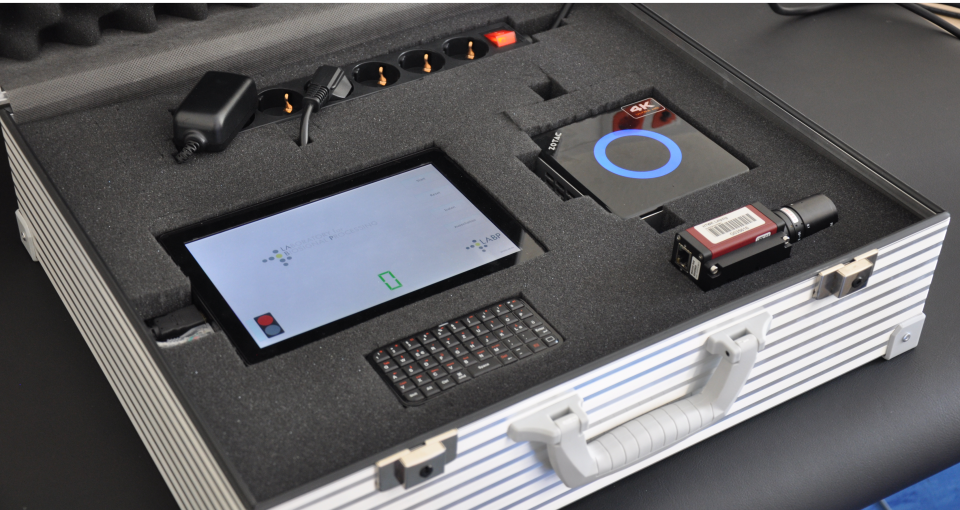 Das System wurde im Rahmen einer Freiwilligenstudie eingetzt, um die kontaklose Messung von Vitalparametern mithilfe von Referenzdaten zu evaluieren, die mithilfe eines einfachen SpO2-Sensors bestimmt wurden. Das folgende Bild zeigt die Anbringung eines Referenz-SpO2-Sensors am Fuß eines Säuglings (links) sowie das vollständig aufgebaute Messsystem (rechts). 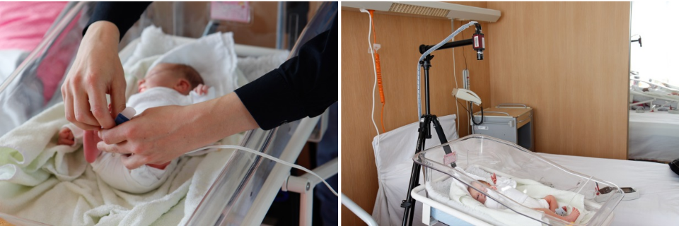 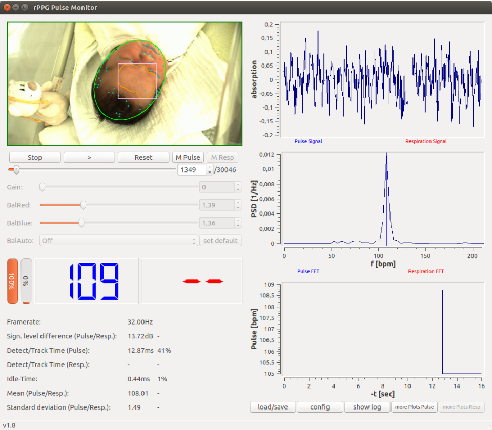 Gern können Sie sich für Fragen auch direkt an uns wenden, nehmen Sie einfach Kontakt mit uns auf.
Das zu diesem Zweck entwickelte prototypische mobile Messsystem besteht aus einer Industriekamera sowie mehrerer in einem Messkoffer installierter Komponenten wie PC, Display und Tastatur. 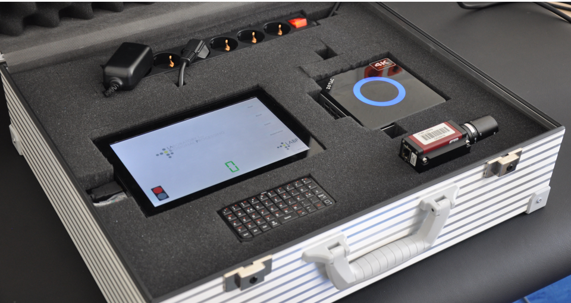 Das System wurde im Rahmen einer Freiwilligenstudie eingetzt, um die kontaklose Messung von Vitalparametern mithilfe von Referenzdaten zu evaluieren, die mithilfe eines einfachen SpO2-Sensors bestimmt wurden. Das folgende Bild zeigt die Anbringung eines Referenz-SpO2-Sensors am Fuß eines Säuglings (links) sowie das vollständig aufgebaute Messsystem (rechts). 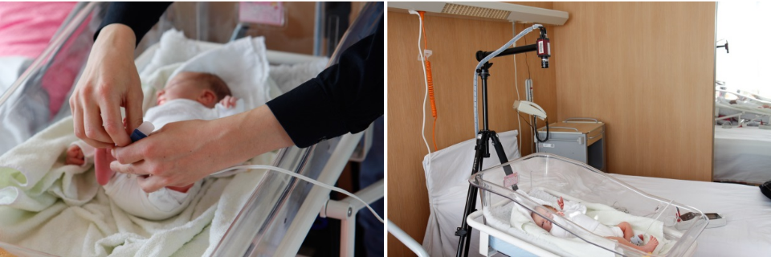 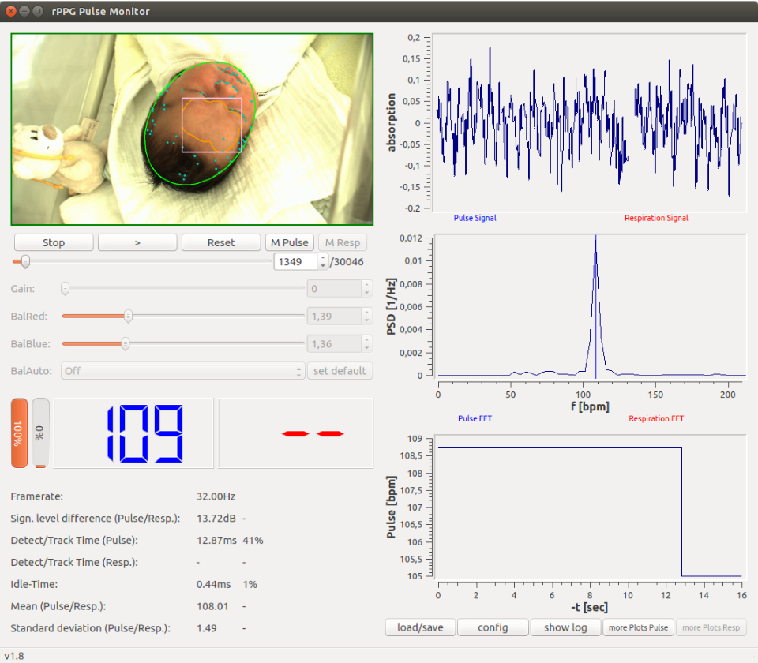 Gern können Sie sich für Fragen auch direkt an uns wenden, nehmen Sie einfach Kontakt mit uns auf.
In den Themenfeldern Kamera-basierte Erfassung von Vitalparametern und Kamera-basierte Erfassung von Mimik wurde am Laboratory for Biosignal Processing die modulare Software RemotePatientMonitor zur Erfassung & Analyse von Vitalparametern und Mimik aus Kameradaten und Videofilmen entwickelt. Teile der Arbeiten wurden im Rahmen der Projekte "Entwicklung eines neuartigen Monitoring-Assistenzsystems für Babybetten" (Förderkennzeichen KF2042007KJ4) vom Bundesministerium für Wirtschaft und Energie vom Bundesministerium für Wirtschaft und Energie und "Nichtinvasive Erfassung und Analyse von Biosignalen zur unterstützenden Bewertung kritischer Vitalzustände" (13FH032IX5) vom Bundesministerium für Bildung und Forschung gefördert.
Grundsätzlich handelt es sich beim RemotePatientMonitor um ein C++-Framework, das durch seine modulare Architektur für verschiedene Anwendungen angepasst werden kann. Die Funktionalität umfasst die Aufnahme, Verarbeitung und Analyse von Videodaten, inesbondere die Extraktion von Herzfrequenz, Atemfrequenz, Blickrichtung und Action-Units zur Mimikbewertung. Teile der Software basieren auf der Open-Source-Bibliothek OpenFace. 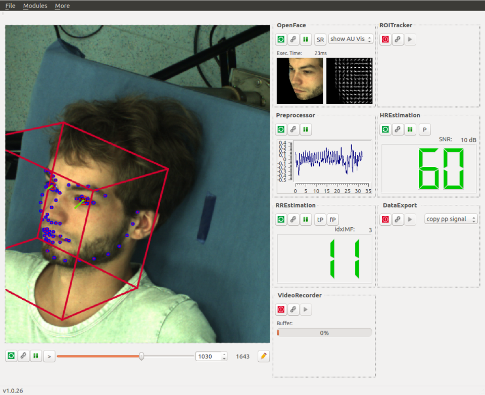 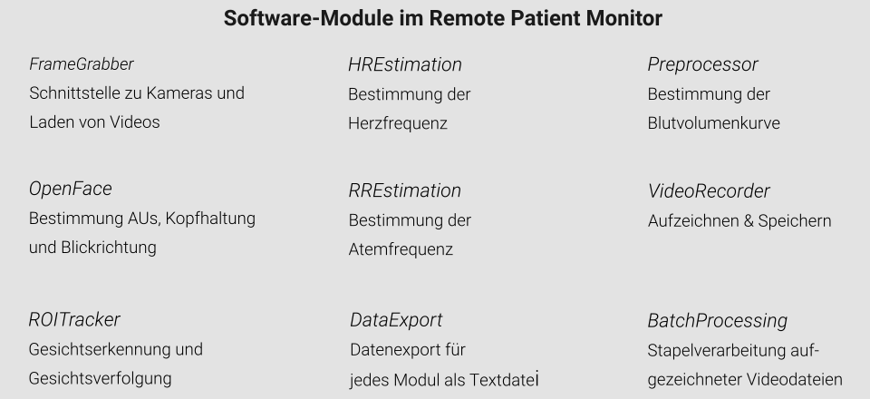 Mehr zu diesem Anwendungsbeispiel erfahren Sie hier in Kürze. Gern können Sie sich für Fragen auch direkt an uns wenden, nehmen Sie einfach Kontakt mit uns auf.
Grundsätzlich handelt es sich beim RemotePatientMonitor um ein C++-Framework, das durch seine modulare Architektur für verschiedene Anwendungen angepasst werden kann. Die Funktionalität umfasst die Aufnahme, Verarbeitung und Analyse von Videodaten, inesbondere die Extraktion von Herzfrequenz, Atemfrequenz, Blickrichtung und Action-Units zur Mimikbewertung. Teile der Software basieren auf der Open-Source-Bibliothek OpenFace. 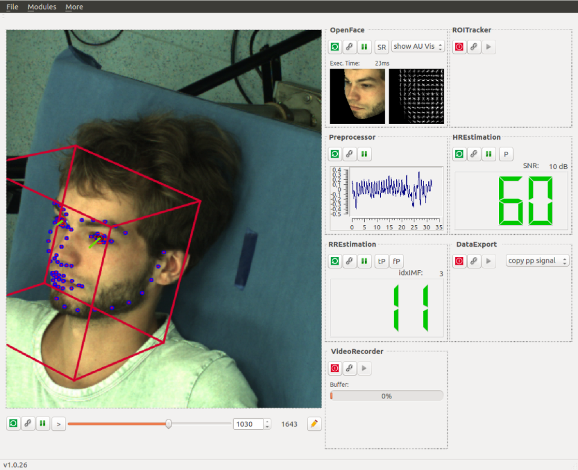 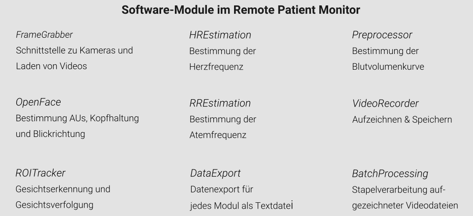 Mehr zu diesem Anwendungsbeispiel erfahren Sie hier in Kürze. Gern können Sie sich für Fragen auch direkt an uns wenden, nehmen Sie einfach Kontakt mit uns auf.
Mehr zu diesem Anwendungsbeispiel erfahren Sie hier in Kürze. Gern können Sie sich für Fragen auch direkt an uns wenden, nehmen Sie einfach Kontakt mit uns auf.
Mehr zu diesem Anwendungsbeispiel erfahren Sie hier in Kürze. Gern können Sie sich für Fragen auch direkt an uns wenden, nehmen Sie einfach Kontakt mit uns auf.
Mehr zu diesem Anwendungsbeispiel erfahren Sie hier in Kürze. Gern können Sie sich für Fragen auch direkt an uns wenden, nehmen Sie einfach Kontakt mit uns auf.
Mehr zu diesem Anwendungsbeispiel erfahren Sie hier in Kürze. Gern können Sie sich für Fragen auch direkt an uns wenden, nehmen Sie einfach Kontakt mit uns auf.
Im Themenfeld Echtzeitverarbeitung und -Quellenlokalisierung von EEG/MEG-Daten wurde am Laboratory for Biosignal Processing in Zusammenarbeit mit dem Max-Planck-Institut für Kognitions- und Neurowissenschaften in Leipzig im Rahmen des vom Bundesministerium für Bildung und Forschung geförderten Projektes "Entwicklung eines Echtzeitsystems zur multimodalen Online-Auswertung neuronaler Aktivität auf Basis hochkanaliger EEG- und MEG-Daten" (NA-Online, Förderkennzeichen 17108X10) eine leistungsfähige, technisch stabile Systemlösung zur Online-Quellenrekonstruktion einschließlich der notwendigen Signalvorverarbeitungsalgorithmen entwickelt. Mit modernsten Parallelverarbeitungstechniken auf Basis von Grafikprozessoren in Verbindung mit effizienten Algorithmen wird so die Analyse der aufgenommenen EEG/MEG-Daten in Echtzeit ermöglicht. Die entwickelte Lösung kann in bestehende EEG- und MEG-Systeme integriert werden.
NA-Online Toolbox: https://github.com/labp/na-online_ow-toolbox 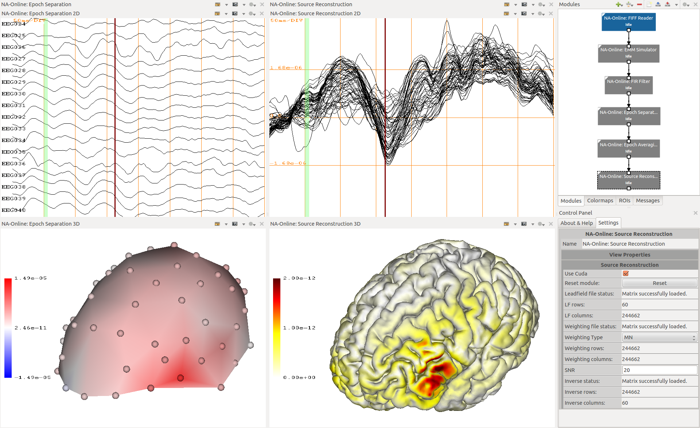 Das Bild zeigt einen Screenshot der NA-Onlne-Toolbox. Die einzelnen Blöcke der Signalverarbeitungskette (rechts oben) können individuell konfiguriert werden (rechts unten). Die vorverarbeiten EEG/MEG-Signale (links oben) können im Sensorraum dargestellt werden (links unten). Nach weiterer Verarbeitung und Mittelung der mehrerer Reizantworten auf den experimentellen Stimulus (Mitte oben) kann eine Quellenrekunstruktion während der Messung durchgeführt und auf der individuellen Gehirnoberfläche dargestellt werden (Mitte unten).
Gern können Sie sich für Fragen auch direkt an uns wenden, nehmen Sie einfach Kontakt mit uns auf.
NA-Online Toolbox: https://github.com/labp/na-online_ow-toolbox 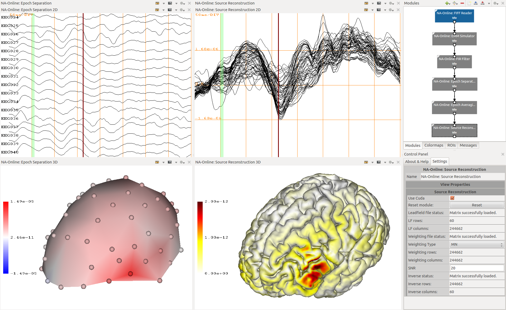 Das Bild zeigt einen Screenshot der NA-Onlne-Toolbox. Die einzelnen Blöcke der Signalverarbeitungskette (rechts oben) können individuell konfiguriert werden (rechts unten). Die vorverarbeiten EEG/MEG-Signale (links oben) können im Sensorraum dargestellt werden (links unten). Nach weiterer Verarbeitung und Mittelung der mehrerer Reizantworten auf den experimentellen Stimulus (Mitte oben) kann eine Quellenrekunstruktion während der Messung durchgeführt und auf der individuellen Gehirnoberfläche dargestellt werden (Mitte unten).
Gern können Sie sich für Fragen auch direkt an uns wenden, nehmen Sie einfach Kontakt mit uns auf.
Einer unserer F&E-Schwerpunkte ist die Entwicklung von Sensorsystemen, in dessen Rahmen wir unter anderem unterschieldliche Sensorik und Sensorsysteme zur Messung von Biosignalen und Vitalparametern entwickeln. Ein Ergebnis dieser Arbeiten ist ein modulares Messsystem zur Erfassung von Biosignalen und Vitalparametern (Biomonitoringsystem).
Das Biomonitoringsystem wurde im Rahmen des vom Bundesministerium für Bildung und Forschung geförderten Verbundprojektes "Neue Methoden zur Echtzeit-Auswertung hochaufgelöster Messungen peripherphysiologischer Daten eines neuartigen modularen Messsystems " (PHYSIDAT, Förderkennzeichen 01EZ1024A) und des vom Bundesministerium für Wirtschaft und Energie geförderten Projektes "System zur simultanen Echtzeitmessung peripher-physiologischer Signale" (SEMEPS, Förderkennzeichen KF2180213KJ2) entwickelt. Es basiert auf einer modularen Systemarchitektur, bei der die Messung einzelner Signale in verschiedene Module ausgelagert ist und die Daten per Funkkommunikation an eine Basisstation übertragen werden. Die Basisstation stellt auch die Synchronisation der unterschiedlichen Module sicher.
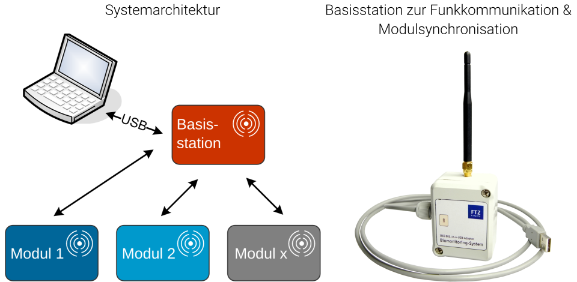 Mit Hilfe des Systems werden die peripherphysiologischen Signale simultan, in hoher Signalqualität und in Echtzeit erfasst. Das Messsystem ermöglicht dabei sowohl das Monitoring einzelner als auch die parallele Analyse mehrerer Patienten. Die modulare Zusammensetzung gewährleistet verschiedene Kombinationsmöglichkeiten für unterschiedliche Fragestellungen. Darüber hinaus steht das System als erweiterbare Plattform für weitere Einsatzgebiete zur Verfügung. Neben der Basisstation besteht das Biomonitoringsystem aus den im folgenden Bild dargestellten Modulen.
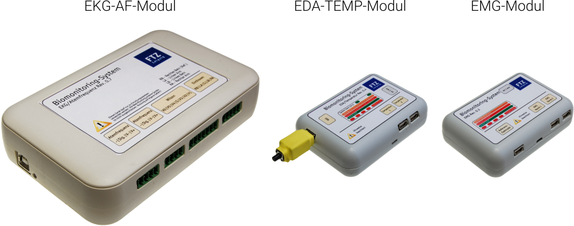 EKG-AF-Modul: Ableitung 12-Kanal-EKG und von 2 Atemkanälen (über Brust- und Bauchgurt); EDA-TEMP-Modul: Ableitung des Hautleitwertes (EDA) und der Hautoberflächentemperatur; EMG-Modul: Ableitung von 2 EMG-Kanälen (elektrisches Muskelaktivität, Elektromyogramm)
Gern können Sie sich für Fragen auch direkt an uns wenden, nehmen Sie einfach Kontakt mit uns auf.
Das Biomonitoringsystem wurde im Rahmen des vom Bundesministerium für Bildung und Forschung geförderten Verbundprojektes "Neue Methoden zur Echtzeit-Auswertung hochaufgelöster Messungen peripherphysiologischer Daten eines neuartigen modularen Messsystems " (PHYSIDAT, Förderkennzeichen 01EZ1024A) und des vom Bundesministerium für Wirtschaft und Energie geförderten Projektes "System zur simultanen Echtzeitmessung peripher-physiologischer Signale" (SEMEPS, Förderkennzeichen KF2180213KJ2) entwickelt. Es basiert auf einer modularen Systemarchitektur, bei der die Messung einzelner Signale in verschiedene Module ausgelagert ist und die Daten per Funkkommunikation an eine Basisstation übertragen werden. Die Basisstation stellt auch die Synchronisation der unterschiedlichen Module sicher.
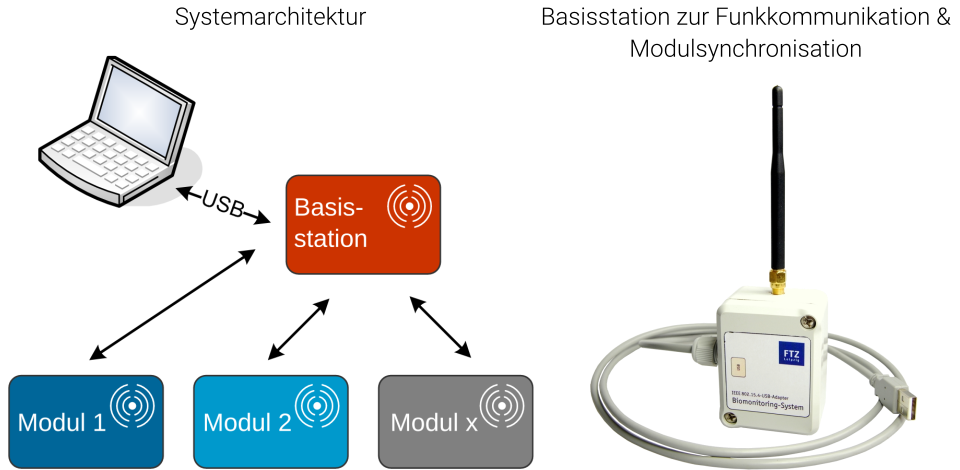 Mit Hilfe des Systems werden die peripherphysiologischen Signale simultan, in hoher Signalqualität und in Echtzeit erfasst. Das Messsystem ermöglicht dabei sowohl das Monitoring einzelner als auch die parallele Analyse mehrerer Patienten. Die modulare Zusammensetzung gewährleistet verschiedene Kombinationsmöglichkeiten für unterschiedliche Fragestellungen. Darüber hinaus steht das System als erweiterbare Plattform für weitere Einsatzgebiete zur Verfügung. Neben der Basisstation besteht das Biomonitoringsystem aus den im folgenden Bild dargestellten Modulen.
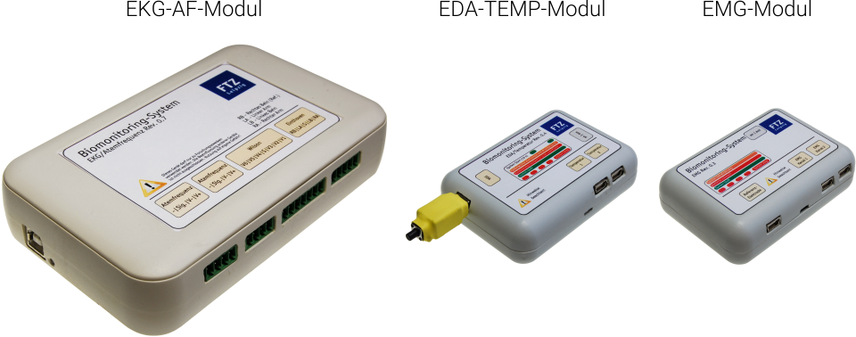 EKG-AF-Modul: Ableitung 12-Kanal-EKG und von 2 Atemkanälen (über Brust- und Bauchgurt); EDA-TEMP-Modul: Ableitung des Hautleitwertes (EDA) und der Hautoberflächentemperatur; EMG-Modul: Ableitung von 2 EMG-Kanälen (elektrisches Muskelaktivität, Elektromyogramm)
Gern können Sie sich für Fragen auch direkt an uns wenden, nehmen Sie einfach Kontakt mit uns auf.
Einer unserer F&E-Schwerpunkte ist die Entwicklung von Sensorsystemen, in dessen Rahmen wir unter anderem unterschieldliche Sensorik und Sensorsysteme zur Messung von Biosignalen und Vitalparametern entwickeln. Ein Ergebnis dieser Arbeiten ist ein Messsystem zur Erforschung des Complex-Regional-Pain-Syndrome (CRPS).
CRPS ist eine chronische neurologische Erkrankung, die als Symptome vor allem Durchblutungsstörungen, Ödeme, Hautveränderungen und starke Schmerzen verursacht. Forschungsergebnisse zeigen, dass die Analyse von Temperaturwerten der rechten und linken Körperhälfte im Vergleich zur Umgebungstemperatur einen Hinweise auf das Vorliegen von CRPS gibt (Krumanova et al., Long-term skin temperature measurements – A practical diagnostic tool in complex regional pain syndrome“, Pain 2008, 140(1), 8-22). Für eine Diagnose müssen diese Temperaturwerte daher mit einem geeigneten Messsystem bestimmt werden.
Am Laboratory for Biosignal Processing wurde im Rahmen des vom Bundesministerium für Wirtschaft und Energie geförderten Projektes "System zur simultanen Echtzeitmessung peripher-physiologischer Signale" (SEMEPS, Förderkennzeichen KF2180213KJ2) gemeinsam mit dem Projektparner MRC Systems GmbH ein CRPS-Messsystem entwickelt. Das System besteht aus einer Masterstation und zwei Sensormodulen, mit denen jeweils zwei Temperatursignale abgeleitet werden können. Die Sensormodule werden i.d.R. am linken und rechten Handgelenk angebracht und sollen dabei die üblicherweise äußerst schmerzempfindlichen Patienten so wenig wie möglich belasten. Die anfallenden Daten werden per Funk an die Masterstation und damit an den Analyserechner übertragen. 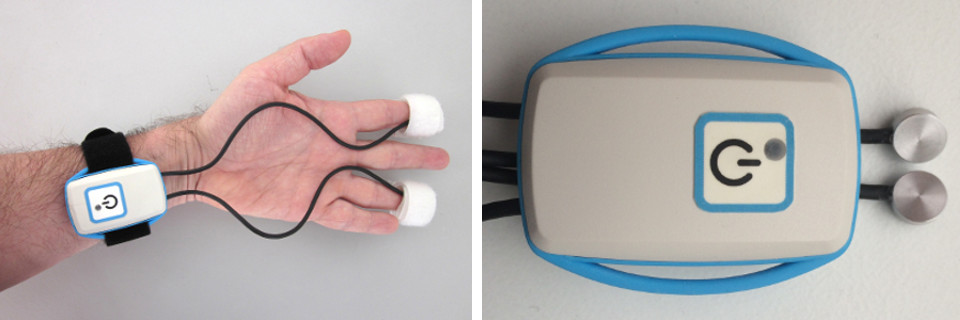 Das Bild zeigt das CRPS-Sensorsystem (rechts) und die Anbringung des Systems zur Messung der Hautoberflächentemperatur an Zeige- und Ringfinger (links).
Gern können Sie sich für Fragen auch direkt an uns wenden, nehmen Sie einfach Kontakt mit uns auf.
CRPS ist eine chronische neurologische Erkrankung, die als Symptome vor allem Durchblutungsstörungen, Ödeme, Hautveränderungen und starke Schmerzen verursacht. Forschungsergebnisse zeigen, dass die Analyse von Temperaturwerten der rechten und linken Körperhälfte im Vergleich zur Umgebungstemperatur einen Hinweise auf das Vorliegen von CRPS gibt (Krumanova et al., Long-term skin temperature measurements – A practical diagnostic tool in complex regional pain syndrome“, Pain 2008, 140(1), 8-22). Für eine Diagnose müssen diese Temperaturwerte daher mit einem geeigneten Messsystem bestimmt werden.
Am Laboratory for Biosignal Processing wurde im Rahmen des vom Bundesministerium für Wirtschaft und Energie geförderten Projektes "System zur simultanen Echtzeitmessung peripher-physiologischer Signale" (SEMEPS, Förderkennzeichen KF2180213KJ2) gemeinsam mit dem Projektparner MRC Systems GmbH ein CRPS-Messsystem entwickelt. Das System besteht aus einer Masterstation und zwei Sensormodulen, mit denen jeweils zwei Temperatursignale abgeleitet werden können. Die Sensormodule werden i.d.R. am linken und rechten Handgelenk angebracht und sollen dabei die üblicherweise äußerst schmerzempfindlichen Patienten so wenig wie möglich belasten. Die anfallenden Daten werden per Funk an die Masterstation und damit an den Analyserechner übertragen. 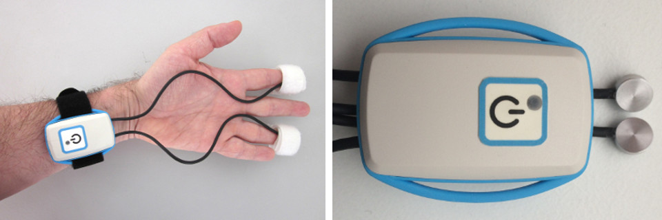 Das Bild zeigt das CRPS-Sensorsystem (rechts) und die Anbringung des Systems zur Messung der Hautoberflächentemperatur an Zeige- und Ringfinger (links).
Gern können Sie sich für Fragen auch direkt an uns wenden, nehmen Sie einfach Kontakt mit uns auf.